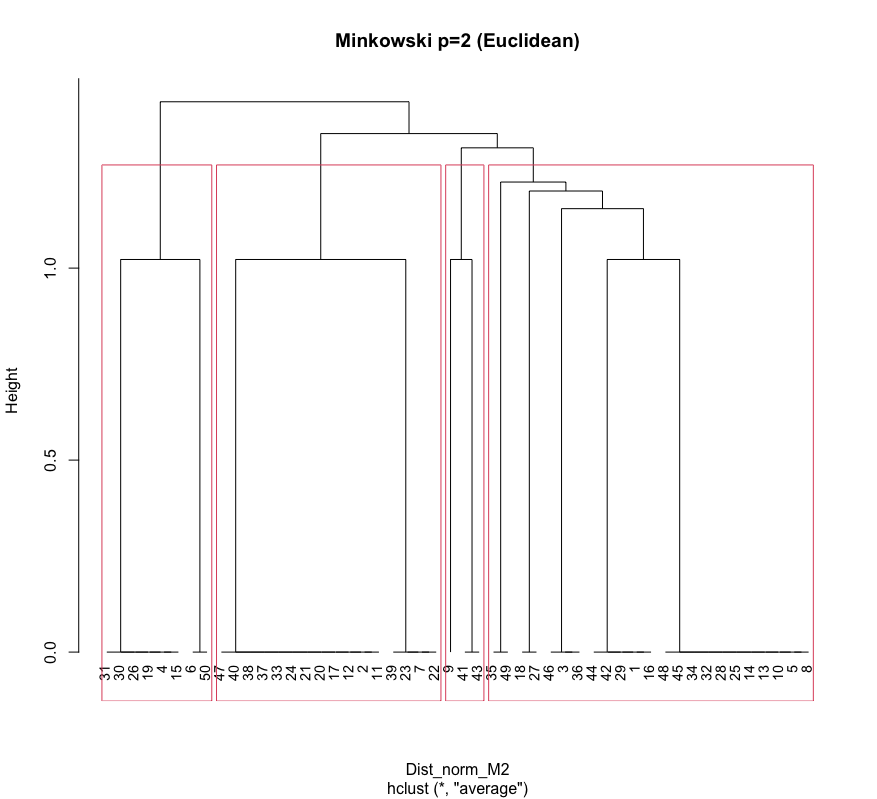
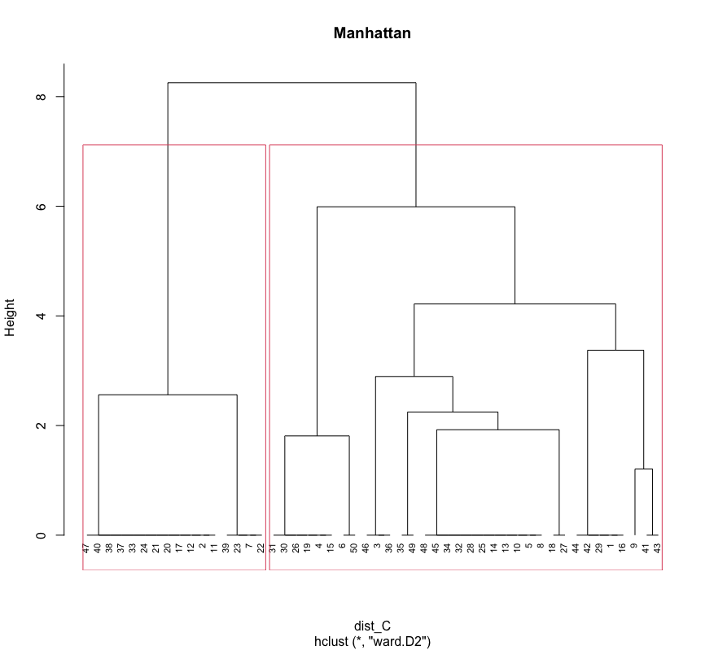
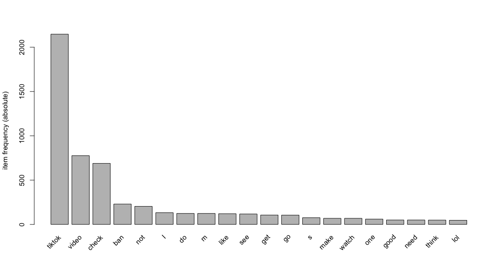
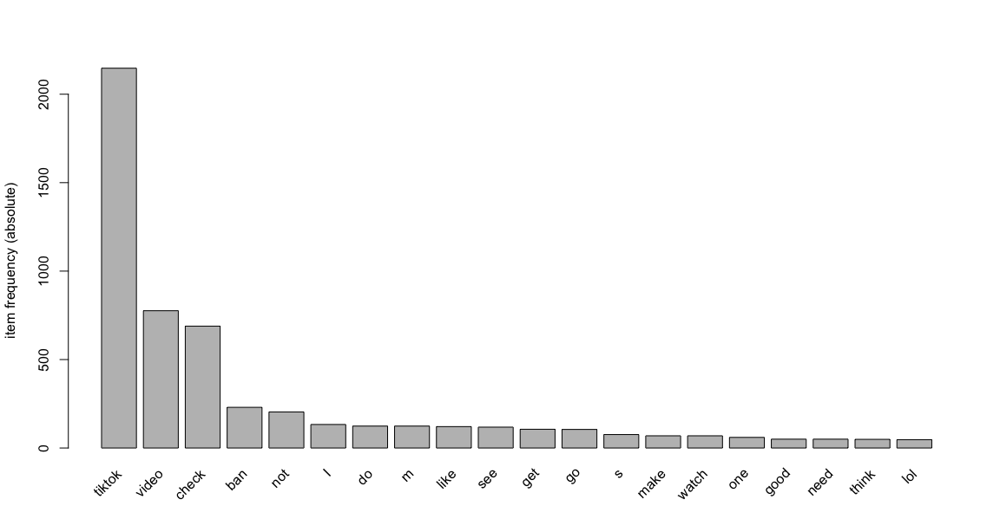

Overview:
Clustering is a way to group a set of data points in a way that similar data points are grouped together. Therefore, clustering algorithms look for similarities or dissimilarities among data points so it can be used to discover groups, categories, and/or similarities within a dataset. Clustering is an unsupervised learning method so there is no label associated with data points. The algorithm tries to find the underlying structure of the data.
There are different approaches and algorithms to perform clustering tasks which can be divided into three sub-categories:
- Partition-based clustering: E.g. k-means, k-median
- Hierarchical clustering: E.g. Agglomeration, Divisive
- Density-based clustering: E.g. DBSCAN
For current progress, the project focus on k-means for partition-based clustering in Python and Hierarchical clustering in R.
Data prep:

Result:
A silhouette plot is a graphical tool we use to evaluate the quality of clusters. The silhouette values show the degree of cohesion and separation of the clusters. Silhouette values measure the relation between cluster cohesion and cluster separation. Thus, the mean of the silhouette values represents the balance of the overall cohesion and separation in all the clusters.
- If silhouette values > 0.70, the structure of the clusters is strong.
- If silhouette values is between 0.51 and 0.70 the structure is reasonable.
- Lower values indicate poor structure.
K-means clustering is a simplest and popular unsupervised machine learning algorithms. We can evaluate the algorithm by two ways such as elbow technique and silhouette technique. We saw differences between them above. The silhouette technique gives us more precise score and number of k for k-means algorithm. However, we can also use elbow technique for quick response and intuition. each object is assigned to its own cluster and then the algorithm proceeds iteratively, at each stage joining the two most similar clusters, continuing until there is just a single cluster. At each stage distances between clusters are recomputed by the Lance--Williams dissimilarity update formula according to the particular clustering method being used.
  
